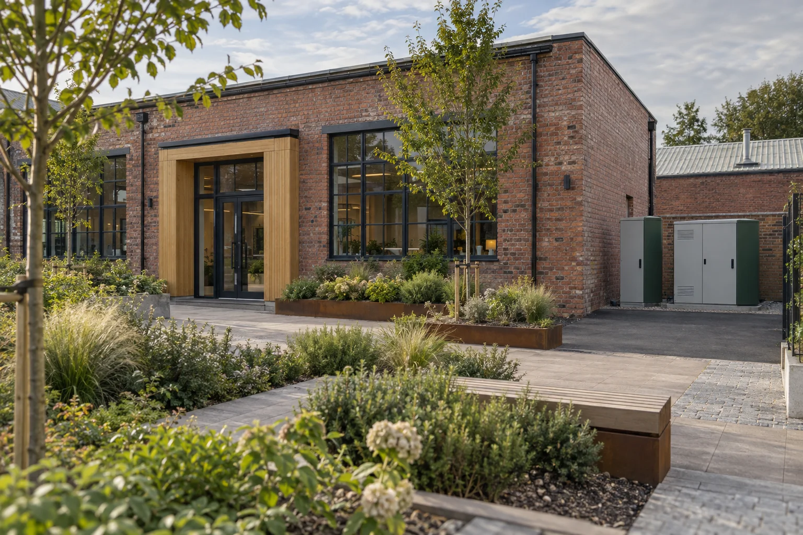

Grounded in
the place it serves.
Bracken is a 27-person team working across site assessment, project coordination and aftercare. We focus on commercial buildings in England and Wales.

Good questions
before a cabinet
arrives on site.
Facilities teams deserve a clear view of the whole project, including the work that sits between suppliers.
We formed in Manchester in 2020 to coordinate that work for modest commercial sites. Our role is to understand the brief, organise the right assessment and keep responsibility visible through delivery and aftercare.
We help clients consider whether storage has a role in their site. We do not begin with a fixed battery size, a generic return estimate or a promise that every building is a fit.
Three connected disciplines.
Site assessment
Organises the objective, operating information and assumptions that need to be examined with the site team.
Project coordination
Keeps equipment, contractor and owner interfaces together, with an agreed sequence for decisions and changes.
Aftercare
Helps the facilities team understand the delivered records, maintenance scope and escalation responsibilities.
A regional focus.
A practical scale.
We serve commercial sites in England and Wales from our Manchester base. Site access, travel requirements and delivery support are scoped to the individual project.
What sits outside our offer
Domestic battery sales, electricity retail, investment products, grid-services trading and utility-scale development are not part of this company’s website offer.